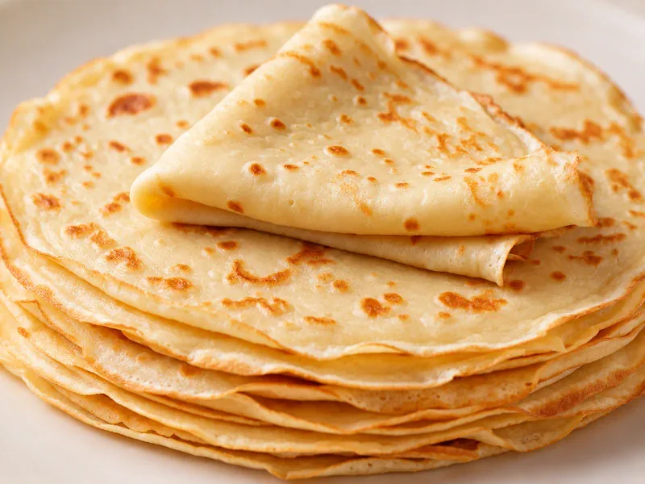

les crêpes.

Les crêpes sont des galettes fines et délicieuses. On peut les garnir de sucre, de chocolat ou de jambon selon ses envies.
Ingrédients
- 250 g de farine
- 3 œufs
- 50 cl de lait
- 50 g de beurre fondu
- 1 cuillère à soupe de sucre
- 1 pincée de sel
Préparation
- Dans un saladier, mélange la farine, le sucre et le sel.
- Ajoute les œufs un à un en fouettant, puis verse le lait progressivement pour éviter les grumeaux.
- Incorpore le beurre fondu et laisse reposer la pâte 30 minutes.
- Fais chauffer une poêle antiadhésive à feu moyen, verse une petite louche de pâte et étale-la en rond.
- Laisse cuire 1 à 2 minutes, retourne la crêpe et fais cuire l’autre face 1 minute.
pour plus d'infos la recette détaillée de pâte à crêpes